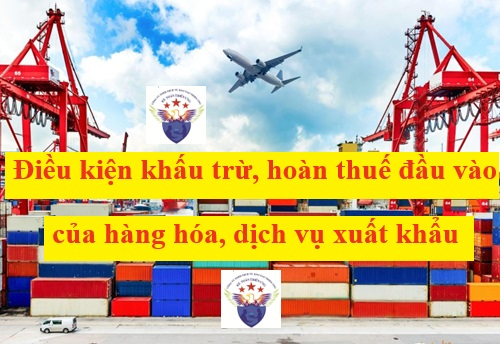

Quy định về điều kiện khấu trừ thuế giá trị gia tăng đầu vào đối với hàng hóa, dịch vụ xuất khẩu theo Nghị định 181/2025/NĐ-CP quy định chi tiết một số điều của Luật Thuế GTGT, ban hành ngày 01/07/2025 có hiệu lực từ ngày 01/7/2025
Theo điều 27 của Nghị định 181/2025/NĐ-CP thì Điều kiện khấu trừ thuế GTGT đầu vào đối với hàng hóa, dịch vụ xuất khẩu như sau:
Đối với hàng hóa, dịch vụ xuất khẩu, ngoài các điều kiện quy định tại Điều 25, Điều 26 Nghị định này còn phải có: hợp đồng ký kết với bên nước ngoài về việc bán, gia công hàng hóa, cung cấp dịch vụ; hóa đơn bán hàng hóa, cung cấp dịch vụ; chứng từ thanh toán không dùng tiền mặt; tờ khai hải quan đối với hàng hóa xuất khẩu (trừ trường hợp không cần phải có tờ khai hải quan theo quy định của pháp luật về hải quan); phiếu đóng gói, vận đơn, chứng từ bảo hiểm hàng hóa (nếu có).
Trong đó:
Trong đó:
1. Đối với hợp đồng bán hàng hóa, gia công hàng hóa, cung cấp dịch vụ cho bên nước ngoài (bên nhập khẩu): trường hợp ủy thác xuất khẩu là hợp đồng ủy thác xuất khẩu và biên bản thanh lý hợp đồng ủy thác xuất khẩu (trường hợp đã kết thúc hợp đồng) hoặc biên bản đối chiếu công nợ định kỳ giữa bên ủy thác xuất khẩu và bên nhận ủy thác xuất khẩu có ghi rõ: số lượng, chủng loại sản phẩm, giá trị hàng ủy thác đã xuất khẩu; số, ngày hợp đồng xuất khẩu của bên nhận ủy thác xuất khẩu ký với bên nước ngoài; số, ngày, số tiền ghi trên chứng từ thanh toán không dùng tiền mặt với bên nước ngoài của bên nhận ủy thác xuất khẩu; số, ngày, số tiền ghi trên chứng từ thanh toán của bên nhận ủy thác xuất khẩu thanh toán cho bên ủy thác xuất khẩu; số, ngày tờ khai hải quan hàng hóa xuất khẩu của bên nhận ủy thác xuất khẩu.
2. Đối với tờ khai hải quan hàng hóa xuất khẩu: tờ khai đã hoàn thành thủ tục hải quan theo quy định của pháp luật về hải quan.
3. Đối với chứng từ thanh toán không dùng tiền mặt: chứng từ chuyển tiền từ tài khoản của bên nhập khẩu (hoặc ngân hàng phục vụ bên nhập khẩu) sang tài khoản mang tên cơ sở kinh doanh (bên xuất khẩu) mở tại ngân hàng theo các hình thức thanh toán phù hợp với thỏa thuận trong hợp đồng và quy định của ngân hàng. Chứng từ thanh toán tiền là giấy báo có của ngân hàng bên xuất khẩu về số tiền đã nhận được từ tài khoản của ngân hàng bên nhập khẩu. Trường hợp thanh toán trả chậm, phải có thỏa thuận ghi trong hợp đồng, phụ lục hợp đồng xuất khẩu, đến thời hạn thanh toán bên xuất khẩu phải có chứng từ thanh toán không dùng tiền mặt. Trường hợp ủy thác xuất khẩu thì phải có chứng từ thanh toán không dùng tiền mặt của bên nước ngoài cho bên nhận ủy thác và bên nhận ủy thác phải có chứng từ thanh toán không dùng tiền mặt đối với hàng xuất khẩu cho bên ủy thác. Trường hợp bên nước ngoài thanh toán trực tiếp cho bên ủy thác xuất khẩu thì bên ủy thác phải có chứng từ thanh toán không dùng tiền mặt và việc thanh toán này phải được quy định trong hợp đồng. Trường hợp bên xuất khẩu bán các khoản phải thu của bên nhập khẩu cho bên thứ ba (bên mua các khoản phải thu) ở nước ngoài thì phải có chứng từ thanh toán không dùng tiền mặt từ bên thứ ba (bên mua các khoản phải thu), việc thanh toán này phải được quy định trong hợp đồng xuất khẩu và hợp đồng mua bán các khoản phải thu với bên thứ ba ở nước ngoài; bên xuất khẩu phải có văn bản cam kết, giải trình về lý do số tiền thanh toán khác số tiền phải thanh toán theo hợp đồng xuất khẩu phù hợp với hợp đồng mua bán các khoản phải thu. Trừ một số trường hợp không phải đáp ứng điều kiện chứng từ thanh toán không dùng tiền mặt như sau:
a) Trường hợp hàng hóa, dịch vụ xuất khẩu được thanh toán cấn trừ vào khoản tiền vay nợ nước ngoài, cơ sở kinh doanh phải có đủ điều kiện, thủ tục, hồ sơ như sau: hợp đồng vay nợ (đối với những khoản vay tài chính có thời hạn dưới 01 năm); hoặc giấy xác nhận đăng ký khoản vay của Ngân hàng Nhà nước Việt Nam (đối với những khoản vay trên 01 năm); chứng từ thanh toán không dùng tiền mặt chuyển tiền của bên nước ngoài vào Việt Nam. Phương thức thanh toán hàng hóa, dịch vụ xuất khẩu cấn trừ vào khoản nợ vay nước ngoài phải được quy định trong hợp đồng xuất khẩu; bản xác nhận của bên nước ngoài về cấn trừ khoản nợ vay; trường hợp sau khi cấn trừ giá trị hàng hóa, dịch vụ xuất khẩu vào khoản nợ vay của nước ngoài có chênh lệch, thì số tiền chênh lệch phải có chứng từ thanh toán không dùng tiền mặt.
b) Trường hợp cơ sở kinh doanh xuất khẩu sử dụng tiền thanh toán hàng hóa, dịch vụ xuất khẩu để góp vốn với bên nhập khẩu ở nước ngoài, cơ sở kinh doanh phải có đủ điều kiện, thủ tục, hồ sơ như sau: hợp đồng góp vốn; việc sử dụng tiền thanh toán hàng hóa, dịch vụ xuất khẩu để góp vốn vào bên nhập khẩu ở nước ngoài phải được quy định trong hợp đồng xuất khẩu; trường hợp số tiền góp vốn nhỏ hơn doanh thu hàng hóa xuất khẩu thì số tiền chênh lệch phải có chứng từ thanh toán không dùng tiền mặt.
c) Trường hợp bên nước ngoài ủy quyền cho bên thứ ba là tổ chức, cá nhân ở nước ngoài thực hiện thanh toán thì việc thanh toán theo ủy quyền phải được quy định trong hợp đồng xuất khẩu (phụ lục hợp đồng hoặc văn bản điều chỉnh hợp đồng (nếu có)).
d) Trường hợp bên nước ngoài yêu cầu bên thứ ba là tổ chức ở Việt Nam thanh toán bù trừ công nợ với bên nước ngoài bằng thực hiện thanh toán không dùng tiền mặt số tiền bên nước ngoài phải thanh toán cho cơ sở kinh doanh xuất khẩu và việc yêu cầu thanh toán bù trừ công nợ nêu trên có quy định trong hợp đồng xuất khẩu (phụ lục hợp đồng hoặc văn bản điều chỉnh hợp đồng (nếu có)) và có chứng từ thanh toán là giấy báo có của ngân hàng bên xuất khẩu về số tiền đã nhận được từ tài khoản của bên thứ ba, đồng thời bên xuất khẩu phải có bản đối chiếu công nợ có xác nhận của bên nước ngoài và bên thứ ba.
đ) Trường hợp bên nước ngoài (bên nhập khẩu) ủy quyền cho bên thứ ba là tổ chức, cá nhân ở nước ngoài thực hiện thanh toán; bên thứ ba yêu cầu tổ chức ở Việt Nam (bên thứ tư) thanh toán bù trừ công nợ với bên thứ ba bằng việc thực hiện thanh toán không dùng tiền mặt số tiền bên nhập khẩu phải thanh toán cho bên xuất khẩu thì bên xuất khẩu phải có đủ các điều kiện, hồ sơ như sau: hợp đồng xuất khẩu (phụ lục hợp đồng hoặc văn bản điều chỉnh hợp đồng (nếu có)) quy định việc ủy quyền thanh toán, bù trừ công nợ giữa các bên; chứng từ thanh toán là giấy báo có của ngân hàng về số tiền bên xuất khẩu nhận được từ tài khoản của bên thứ tư; bản đối chiếu công nợ có xác nhận của các bên liên quan (giữa bên xuất khẩu với bên nhập khẩu, giữa bên thứ ba ở nước ngoài với bên thứ tư là tổ chức ở Việt Nam).
e) Trường hợp bên nước ngoài ủy quyền cho Văn phòng đại diện tại Việt Nam thực hiện thanh toán vào tài khoản của bên xuất khẩu và việc ủy quyền thanh toán nêu trên có quy định trong hợp đồng xuất khẩu (phụ lục hợp đồng hoặc văn bản điều chỉnh hợp đồng (nếu có)).
g) Trường hợp bên nước ngoài (trừ trường hợp bên nước ngoài là cá nhân) thực hiện thanh toán từ tài khoản tiền gửi vãng lai của bên nước ngoài mở tại các tổ chức tín dụng tại Việt Nam thì việc thanh toán này phải được quy định trong hợp đồng xuất khẩu (phụ lục hợp đồng hoặc văn bản điều chỉnh hợp đồng (nếu có)). Chứng từ thanh toán là giấy báo có của ngân hàng bên xuất khẩu về số tiền đã nhận được từ tài khoản vãng lai của bên nước ngoài đã ký hợp đồng.
h) Trường hợp bên nước ngoài là doanh nghiệp tư nhân thực hiện thanh toán thông qua tài khoản vãng lai của chủ doanh nghiệp tư nhân mở tại tổ chức tín dụng ở Việt Nam và được quy định trong hợp đồng xuất khẩu (phụ lục hợp đồng hoặc văn bản điều chỉnh hợp đồng (nếu có)) thì được xác định là thanh toán không dùng tiền mặt. Trường hợp người mua bên nước ngoài là doanh nghiệp tư nhân nhập cảnh qua các cửa khẩu quốc tế của Việt Nam bằng hộ chiếu mang theo ngoại tệ tiền mặt, đồng Việt Nam tiền mặt để nộp vào tài khoản vãng lai của chủ doanh nghiệp tư nhân mở tại tổ chức tín dụng ở Việt Nam phải khai báo hải quan cửa khẩu khi xuất cảnh, nhập cảnh theo hướng dẫn của Ngân hàng Nhà nước Việt Nam.
i) Trường hợp bên nước ngoài thực hiện thanh toán không dùng tiền mặt nhưng số tiền thanh toán trên chứng từ thanh toán không dùng tiền mặt không phù hợp với số tiền phải thanh toán như đã thỏa thuận trong hợp đồng hoặc phụ lục hợp đồng thì: nếu số tiền thanh toán trên chứng từ thanh toán không dùng tiền mặt có trị giá nhỏ hơn số tiền phải thanh toán như đã thỏa thuận trong hợp đồng hoặc phụ lục hợp đồng thì cơ sở kinh doanh phải giải trình rõ lý do như: phí chuyển tiền của ngân hàng, điều chỉnh giảm giá do hàng kém chất lượng hoặc thiếu hụt (đối với trường hợp này phải có văn bản thỏa thuận giảm giá giữa bên nhập khẩu và bên xuất khẩu); nếu số tiền thanh toán trên chứng từ thanh toán không dùng tiền mặt có trị giá lớn hơn số tiền phải thanh toán như đã thỏa thuận trong hợp đồng hoặc phụ lục hợp đồng thì cơ sở kinh doanh phải giải trình rõ lý do như: thanh toán một lần cho nhiều hợp đồng, ứng trước tiền hàng; cơ sở kinh doanh phải cam kết chịu trách nhiệm trước pháp luật về các lý do giải trình với cơ quan thuế và các văn bản điều chỉnh (nếu có).
k) Trường hợp bên nước ngoài thanh toán không dùng tiền mặt nhưng chứng từ thanh toán không dùng tiền mặt không đúng tên ngân hàng phải thanh toán đã thỏa thuận trong hợp đồng, nếu nội dung chứng từ thể hiện rõ tên người thanh toán, tên người thụ hưởng, số hợp đồng xuất khẩu, giá trị thanh toán phù hợp với hợp đồng xuất khẩu đã được ký kết thì được chấp nhận là chứng từ thanh toán hợp lệ.
l) Trường hợp cơ sở kinh doanh xuất khẩu hàng hóa, dịch vụ cho bên nước ngoài (bên thứ hai), đồng thời nhập khẩu hàng hóa, dịch vụ với bên nước ngoài khác hoặc mua hàng với tổ chức, cá nhân ở Việt Nam (bên thứ ba); nếu cơ sở kinh doanh có thỏa thuận với bên thứ hai và bên thứ ba về việc bên thứ hai thực hiện thanh toán không dùng tiền mặt cho bên thứ ba số tiền mà cơ sở kinh doanh còn phải thanh toán cho bên thứ ba thì việc bù trừ thanh toán giữa các bên phải được quy định trong hợp đồng xuất khẩu, hợp đồng nhập khẩu hoặc hợp đồng mua hàng (phụ lục hợp đồng hoặc văn bản điều chỉnh hợp đồng (nếu có)) và cơ sở kinh doanh phải có bản đối chiếu công nợ có xác nhận của các bên liên quan (giữa cơ sở kinh doanh với bên thứ hai, giữa cơ sở kinh doanh với bên thứ ba).
m) Trường hợp hàng hóa xuất khẩu ra nước ngoài nhưng vì lý do khách quan bên nước ngoài từ chối không nhận hàng và cơ sở kinh doanh tìm được khách hàng mới cùng quốc gia với khách hàng ký kết hợp đồng mua bán ban đầu để bán lô hàng trên thì chứng từ khấu trừ gồm toàn bộ hồ sơ xuất khẩu liên quan đến hợp đồng xuất khẩu ký kết với khách hàng ban đầu (hợp đồng, tờ khai hải quan đối với hàng hóa xuất khẩu, hóa đơn), công văn giải trình của cơ sở kinh doanh lý do có sự sai khác tên khách hàng mua (trong đó cơ sở kinh doanh cam kết tự chịu trách nhiệm về tính chính xác của thông tin, đảm bảo không có gian lận), toàn bộ hồ sơ xuất khẩu liên quan đến hợp đồng xuất khẩu ký kết với khách hàng mới (hợp đồng, hóa đơn bán hàng, chứng từ thanh toán không dùng tiền mặt theo quy định và các chứng từ khác (nếu có)).
n) Trường hợp xuất khẩu lao động mà cơ sở kinh doanh xuất khẩu lao động thu tiền trực tiếp của người lao động thì phải có chứng từ thu tiền của người lao động.
o) Trường hợp xuất khẩu hàng hóa, dịch vụ để trả nợ nước ngoài cho Chính phủ thì phải có xác nhận của ngân hàng về lô hàng xuất khẩu đã được bên nước ngoài chấp nhận trừ nợ hoặc xác nhận bộ chứng từ đã được gửi cho bên nước ngoài để trừ nợ; chứng từ thanh toán thực hiện theo hướng dẫn của Bộ Tài chính.
p) Trường hợp hàng hóa, dịch vụ xuất khẩu thanh toán bằng hàng là trường hợp xuất khẩu hàng hóa (kể cả gia công hàng hóa xuất khẩu), dịch vụ cho bên nước ngoài nhưng việc thanh toán giữa cơ sở kinh doanh xuất khẩu và bên nước ngoài bằng hình thức bù trừ giữa giá trị hàng hóa, dịch vụ xuất khẩu, tiền công gia công hàng hóa xuất khẩu với giá trị hàng hóa, dịch vụ mua của bên nước ngoài. Hàng hóa, dịch vụ xuất khẩu thanh toán bằng hàng thì: phương thức thanh toán đối với hàng xuất khẩu bằng hàng phải được quy định trong hợp đồng xuất khẩu; hợp đồng mua hàng hóa, dịch vụ của bên nước ngoài; có tờ khai hải quan về hàng hóa nhập khẩu thanh toán bù trừ với hàng hóa, dịch vụ xuất khẩu; có văn bản xác nhận với bên nước ngoài về việc số tiền thanh toán bù trừ giữa hàng hóa, dịch vụ xuất khẩu với hàng hóa nhập khẩu, dịch vụ mua của bên nước ngoài; trường hợp sau khi thanh toán bù trừ giữa giá trị hàng hóa, dịch vụ xuất khẩu và giá trị hàng hóa, dịch vụ nhập khẩu có chênh lệch, số tiền chênh lệch phải có chứng từ thanh toán không dùng tiền mặt.
q) Trường hợp xuất khẩu hàng hóa sang các nước có chung biên giới theo quy định của pháp luật về việc quản lý hoạt động thương mại biên giới với các nước có chung biên giới thực hiện theo hướng dẫn của Bộ Tài chính và Ngân hàng Nhà nước Việt Nam.
r) Trường hợp bên nước ngoài mất khả năng thanh toán, cơ sở kinh doanh xuất khẩu hàng hóa phải có văn bản giải trình rõ lý do và được sử dụng một trong số các giấy tờ sau để thay thế cho chứng từ thanh toán không dùng tiền mặt: tờ khai hải quan hàng hóa nhập khẩu từ Việt Nam đã đăng ký với cơ quan hải quan tại nước nhập khẩu hàng hóa (01 bản sao); hoặc đơn khởi kiện đến tòa án hoặc cơ quan có thẩm quyền tại nước nơi cư trú kèm giấy thông báo hoặc kèm giấy tờ có tính chất xác nhận của cơ quan này về việc thụ lý đơn khởi kiện (01 bản sao); hoặc phán quyết thắng kiện của tòa án nước ngoài cho cơ sở kinh doanh (01 bản sao); hoặc giấy tờ của tổ chức có thẩm quyền nước ngoài xác nhận (hoặc thông báo) bên nước ngoài phá sản hoặc mất khả năng thanh toán (01 bản sao).
s) Trường hợp hàng hóa xuất khẩu không đảm bảo chất lượng phải tiêu hủy, cơ sở kinh doanh xuất khẩu hàng hóa phải có văn bản giải trình rõ lý do và được sử dụng biên bản tiêu hủy (hoặc giấy tờ xác nhận việc tiêu hủy) hàng hóa ở nước ngoài của cơ quan thực hiện tiêu hủy (01 bản sao), kèm chứng từ thanh toán không dùng tiền mặt đối với chi phí tiêu hủy thuộc trách nhiệm chi trả của cơ sở kinh doanh xuất khẩu hàng hóa hoặc kèm giấy tờ chứng minh chi phí tiêu hủy thuộc trách nhiệm của bên nhập khẩu hoặc bên thứ ba (01 bản sao) để thay thế cho chứng từ thanh toán không dùng tiền mặt. Trường hợp bên nhập khẩu hàng hóa phải đứng ra làm thủ tục tiêu hủy tại nước ngoài thì biên bản tiêu hủy (hoặc giấy tờ xác nhận việc tiêu hủy) ghi tên bên nhập khẩu hàng hóa.
t) Trường hợp hàng hóa xuất khẩu bị tổn thất, cơ sở kinh doanh xuất khẩu hàng hóa phải có văn bản giải trình rõ lý do và được sử dụng một trong số các giấy tờ sau để thay thế cho chứng từ thanh toán không dùng tiền mặt: giấy xác nhận việc tổn thất ngoài biên giới Việt Nam của cơ quan có thẩm quyền liên quan (01 bản sao); hoặc biên bản xác định tổn thất hàng hóa trong quá trình vận chuyển ngoài biên giới Việt Nam nêu rõ nguyên nhân tổn thất (01 bản sao). Nếu cơ sở kinh doanh xuất khẩu hàng hóa đã nhận được tiền bồi thường hàng hóa xuất khẩu bị tổn thất ngoài biên giới Việt Nam thì phải gửi kèm chứng từ thanh toán không dùng tiền mặt về số tiền nhận được (01 bản sao).
u) Bản sao các loại giấy tờ quy định tại khoản này phải có xác nhận sao y bản chính của cơ sở kinh doanh xuất khẩu hàng hóa. Trường hợp ngôn ngữ sử dụng trong các chứng từ, giấy tờ xác nhận của bên thứ ba thay thế cho chứng từ thanh toán không dùng tiền mặt không phải là tiếng Anh hoặc không có tiếng Anh thì phải có 01 bản dịch công chứng gửi kèm. Trường hợp các bên liên quan phát hành, sử dụng và lưu trữ chứng từ dưới dạng điện tử thì phải có bản in bằng giấy. Cơ sở kinh doanh xuất khẩu hàng hóa tự chịu hoàn toàn trách nhiệm về tính chính xác của các loại giấy tờ thay thế cho chứng từ thanh toán không dùng tiền mặt cho các trường hợp quy định tại khoản này.
4. Đối với hóa đơn bán hàng hóa, cung cấp dịch vụ: hóa đơn thương mại hoặc hóa đơn giá trị gia tăng theo quy định của pháp luật về hóa đơn, chứng từ.
===============================
Còn trước ngày 01/07/2025, Quy định về điều kiện khấu trừ, hoàn thuế đầu vào của hàng hóa, dịch vụ xuất khẩu theo Thông tư 219/2013/TT-BTC hướng dẫn luật Thuế GTGT, được sửa đổi bởi Khoản 11 Điều 1 Thông tư 26/2015/TT-BTC như sau:
Theo điều 16 của Thông tư 219/2013/TT-BTC thì:
Hàng hóa, dịch vụ xuất khẩu (trừ các trường hợp hướng dẫn Điều 17 Thông tư này) để được khấu trừ thuế, hoàn thuế GTGT đầu vào phải có đủ điều kiện và các thủ tục nêu tại khoản 2 Điều 9 và khoản 1 Điều 15 Thông tư này, cụ thể như sau:
1. Hợp đồng bán hàng hóa, gia công hàng hóa (đối với trường hợp gia công hàng hóa), cung ứng dịch vụ cho tổ chức, cá nhân nước ngoài. Đối với trường hợp ủy thác xuất khẩu là hợp đồng ủy thác xuất khẩu và biên bản thanh lý hợp đồng ủy thác xuất khẩu (trường hợp đã kết thúc hợp đồng) hoặc biên bản đối chiếu công nợ định kỳ giữa bên ủy thác xuất khẩu và bên nhận ủy thác xuất khẩu có ghi rõ: số lượng, chủng loại sản phẩm, giá trị hàng ủy thác đã xuất khẩu; số, ngày hợp đồng xuất khẩu của bên nhận ủy thác xuất khẩu ký với nước ngoài; số, ngày, số tiền ghi trên chứng từ thanh toán qua ngân hàng với nước ngoài của bên nhận ủy thác xuất khẩu; số, ngày, số tiền ghi trên chứng từ thanh toán của bên nhận ủy thác xuất khẩu thanh toán cho bên ủy thác xuất khẩu; số, ngày tờ khai hải quan hàng hóa xuất khẩu của bên nhận ủy thác xuất khẩu.
2. Tờ khai hải quan đối với hàng hóa xuất khẩu đã làm xong thủ tục hải quan theo hướng dẫn của Bộ Tài chính về thủ tục hải quan; kiểm tra, giám sát hải quan; thuế xuất khẩu, thuế nhập khẩu và quản lý thuế đối với hàng hóa xuất khẩu, nhập khẩu.
Đối với cơ sở kinh doanh xuất khẩu sản phẩm phần mềm dưới các hình thức tài liệu, hồ sơ, cơ sở dữ liệu đóng gói cứng để được khấu trừ, hoàn thuế GTGT đầu vào, cơ sở kinh doanh phải đảm bảo thủ tục về tờ khai hải quan như đối với hàng hóa thông thường.
Riêng các trường hợp sau không cần tờ khai hải quan:
- Đối với cơ sở kinh doanh xuất khẩu dịch vụ, phần mềm qua phương tiện điện tử thì không cần có tờ khai hải quan. Cơ sở kinh doanh phải thực hiện đầy đủ các quy định về thủ tục xác nhận bên mua đã nhận được dịch vụ, phần mềm xuất khẩu qua phương tiện điện tử theo đúng quy định của pháp luật về thương mại điện tử.
- Hoạt động xây dựng, lắp đặt công trình ở nước ngoài hoặc ở trong khu phi thuế quan.
- Cơ sở kinh doanh cung cấp điện, nước, văn phòng phẩm và hàng hóa phục vụ sinh hoạt hàng ngày của doanh nghiệp chế xuất gồm: lương thực, thực phẩm, hàng tiêu dùng (bao gồm cả bảo hộ lao động: quần, áo, mũ, giầy, ủng, găng tay).
3. Hàng hóa, dịch vụ xuất khẩu phải thanh toán qua ngân hàng
a) Thanh toán qua ngân hàng là việc chuyển tiền từ tài khoản của bên nhập khẩu sang tài khoản mang tên bên xuất khẩu mở tại ngân hàng theo các hình thức thanh toán phù hợp với thỏa thuận trong hợp đồng và quy định của ngân hàng. Chứng từ thanh toán tiền là giấy báo Có của ngân hàng bên xuất khẩu về số tiền đã nhận được từ tài khoản của ngân hàng bên nhập khẩu. Trường hợp thanh toán chậm trả, phải có thỏa thuận ghi trong hợp đồng xuất khẩu, đến thời hạn thanh toán cơ sở kinh doanh phải có chứng từ thanh toán qua ngân hàng. Trường hợp ủy thác xuất khẩu thì phải có chứng từ thanh toán qua ngân hàng của phía nước ngoài cho bên nhận ủy thác và bên nhận ủy thác phải thanh toán tiền hàng xuất khẩu qua ngân hàng cho bên ủy thác. Trường hợp bên nước ngoài thanh toán trực tiếp cho bên ủy thác xuất khẩu thì bên ủy thác phải có chứng từ thanh toán qua ngân hàng và việc thanh toán như trên phải được quy định trong hợp đồng.
b) Các trường hợp thanh toán dưới đây cũng được coi là thanh toán qua ngân hàng:
b.1) Trường hợp hàng hóa, dịch vụ xuất khẩu được thanh toán cấn trừ vào khoản tiền vay nợ nước ngoài cơ sở kinh doanh phải có đủ điều kiện, thủ tục, hồ sơ như sau:
- Hợp đồng vay nợ (đối với những khoản vay tài chính có thời hạn dưới 01 năm); hoặc giấy xác nhận đăng ký khoản vay của Ngân hàng Nhà nước Việt Nam (đối với những khoản vay trên 01 năm).
- Chứng từ chuyển tiền của phía nước ngoài vào Việt Nam qua ngân hàng.
Phương thức thanh toán hàng hóa, dịch vụ xuất khẩu cấn trừ vào khoản nợ vay nước ngoài phải được quy định trong hợp đồng xuất khẩu.
- Bản xác nhận của phía nước ngoài về cấn trừ khoản nợ vay.
- Trường hợp sau khi cấn trừ giá trị hàng hóa, dịch vụ xuất khẩu vào khoản nợ vay của nước ngoài có chênh lệch, thì số tiền chênh lệch phải thực hiện thanh toán qua ngân hàng. Chứng từ thanh toán qua ngân hàng theo hướng dẫn tại điểm này.
b.2) Trường hợp cơ sở kinh doanh xuất khẩu sử dụng tiền thanh toán hàng hóa, dịch vụ xuất khẩu để góp vốn với cơ sở nhập khẩu ở nước ngoài, cơ sở kinh doanh phải có đủ điều kiện thủ tục, hồ sơ như sau:
- Hợp đồng góp vốn.
- Việc sử dụng tiền thanh toán hàng hóa, dịch vụ xuất khẩu để góp vốn vào cơ sở nhập khẩu ở nước ngoài phải được quy định trong hợp đồng xuất khẩu.
- Trường hợp số tiền góp vốn nhỏ hơn doanh thu hàng hóa xuất khẩu thì số tiền chênh lệch phải thực hiện thanh toán qua ngân hàng theo hướng dẫn tại điểm này.
b.3) Trường hợp phía nước ngoài ủy quyền cho bên thứ ba là tổ chức, cá nhân ở nước ngoài thực hiện thanh toán thì việc thanh toán theo ủy quyền phải được quy định trong hợp đồng xuất khẩu (phụ lục hợp đồng hoặc văn bản điều chỉnh hợp đồng - nếu có).
b.4) Trường hợp phía nước ngoài yêu cầu bên thứ 3 là tổ chức ở Việt Nam thanh toán bù trừ công nợ với phía nước ngoài bằng thực hiện thanh toán qua ngân hàng số tiền phía nước ngoài phải thanh toán cho cơ sở kinh doanh xuất khẩu và việc yêu cầu thanh toán bù trừ công nợ nêu trên có quy định trong hợp đồng xuất khẩu (phụ lục hợp đồng hoặc văn bản điều chỉnh hợp đồng- nếu có) và có chứng từ thanh toán là giấy báo có của ngân hàng bên xuất khẩu về số tiền đã nhận được từ tài khoản của bên thứ 3, đồng thời bên xuất khẩu phải xuất trình bản đối chiếu công nợ có xác nhận của bên nước ngoài và bên thứ 3.
b.5) Trường hợp phía nước ngoài (bên nhập khẩu) ủy quyền cho bên thứ ba là tổ chức, cá nhân ở nước ngoài thực hiện thanh toán; bên thứ ba yêu cầu tổ chức ở Việt Nam (bên thứ tư) thanh toán bù trừ công nợ với bên thứ ba bằng việc thực hiện thanh toán qua ngân hàng số tiền bên nhập khẩu phải thanh toán cho cơ sở kinh doanh Việt Nam xuất khẩu thì cơ sở kinh doanh xuất khẩu phải có đủ các điều kiện, hồ sơ như sau:
- Hợp đồng xuất khẩu (phụ lục hợp đồng hoặc văn bản điều chỉnh hợp đồng - nếu có) quy định việc ủy quyền thanh toán, bù trừ công nợ giữa các bên.
- Chứng từ thanh toán là giấy báo có của ngân hàng về số tiền cơ sở kinh doanh Việt Nam xuất khẩu nhận được từ tài khoản của bên thứ tư.
- Bản đối chiếu công nợ có xác nhận của các bên liên quan (giữa cơ sở kinh doanh xuất khẩu với bên nhập khẩu, giữa bên thứ ba ở nước ngoài với bên thứ tư là tổ chức ở Việt Nam).
b.6) Trường hợp phía nước ngoài ủy quyền cho Văn phòng đại diện tại Việt Nam thực hiện thanh toán vào tài khoản của bên xuất khẩu và việc ủy quyền thanh toán nêu trên có quy định trong hợp đồng xuất khẩu (phụ lục hợp đồng hoặc văn bản điều chỉnh hợp đồng - nếu có).
b.8) Trường hợp phía nước ngoài thanh toán qua ngân hàng nhưng số tiền thanh toán trên chứng từ không phù hợp với số tiền phải thanh toán như đã thỏa thuận trong hợp đồng hoặc phụ lục hợp đồng thì:
4. Hóa đơn. Ngày xác định doanh thu xuất khẩu để tính thuế là ngày xác nhận hoàn tất thủ tục hải quan trên tờ khai hải quan
b.7) Trường hợp phía nước ngoài (trừ trường hợp phía nước ngoài là cá nhân) thanh toán từ tài khoản tiền gửi vãng lai của phía nước ngoài mở tại các tổ chức tín dụng tại Việt Nam thì việc thanh toán này phải được quy định trong hợp đồng xuất khẩu (phụ lục hợp đồng hoặc văn bản điều chỉnh hợp đồng- nếu có). Chứng từ thanh toán là giấy báo Có của ngân hàng bên xuất khẩu về số tiền đã nhận được từ tài khoản vãng lai của người mua phía nước ngoài đã ký hợp đồng.
Trường hợp xuất khẩu cho người mua phía nước ngoài là doanh nghiệp tư nhân và việc thanh toán thông qua tài khoản vãng lai của chủ doanh nghiệp tư nhân mở tại tổ chức tín dụng ở Việt Nam và được quy định trong hợp đồng xuất khẩu (phụ lục hợp đồng hoặc văn bản điều chỉnh hợp đồng-nếu có) thì được xác định là thanh toán qua ngân hàng.
Cơ quan thuế khi kiểm tra việc khấu trừ, hoàn thuế đối với hàng hóa xuất khẩu thanh toán qua tài khoản vãng lai, cần phối hợp với tổ chức tín dụng nơi người mua phía nước ngoài mở tài khoản để đảm bảo việc thanh toán, chuyển tiền thực hiện đúng mục đích và phù hợp với quy định của pháp luật. Người nhập cảnh mang tiền qua biên giới phải kê khai rõ số tiền mang theo là tiền thanh toán cụ thể đối với từng hợp đồng mua bán hàng hóa và tờ khai xuất khẩu hàng hóa; đồng thời xuất trình hợp đồng mua bán hàng hóa, tờ khai xuất khẩu để công chức hải quan kiểm tra, đối chiếu. Trường hợp người nhập cảnh không phải là đại diện doanh nghiệp nước ngoài trực tiếp ký hợp đồng mua bán với doanh nghiệp Việt Nam thì phải có giấy ủy quyền (bản dịch tiếng Việt hoặc tiếng Anh, cùng với bản chính bằng tiếng của nước có đường biên giới cửa khẩu tiếp giáp) của tổ chức, cá nhân nước ngoài đã ký hợp đồng mua bán nêu trên. Giấy ủy quyền này chỉ áp dụng cho một lần mang tiền vào Việt Nam và phải ghi rõ số lượng tiền mang vào theo hợp đồng mua bán cụ thể
(Điểm này được sửa đổi bởi Khoản 11 Điều 1 Thông tư 26/2015/TT-BTC có hiệu lực từ ngày 01/01/2015)
b.8) Trường hợp phía nước ngoài thanh toán qua ngân hàng nhưng số tiền thanh toán trên chứng từ không phù hợp với số tiền phải thanh toán như đã thỏa thuận trong hợp đồng hoặc phụ lục hợp đồng thì:
- Nếu số tiền thanh toán trên chứng từ thanh toán qua ngân hàng có trị giá nhỏ hơn số tiền phải thanh toán như đã thỏa thuận trong hợp đồng hoặc phụ lục hợp đồng thì cơ sở kinh doanh phải giải trình rõ lý do như: phí chuyển tiền của ngân hàng, điều chỉnh giảm giá do hàng kém chất lượng hoặc thiếu hụt (đối với trường hợp này phải có văn bản thỏa thuận giảm giá giữa bên mua và bán)…;
- Nếu số tiền thanh toán trên chứng từ thanh toán qua ngân hàng có trị giá lớn hơn số tiền phải thanh toán như đã thỏa thuận trong hợp đồng hoặc phụ lục hợp đồng thì cơ sở kinh doanh phải giải trình rõ lý do như: thanh toán một lần cho nhiều hợp đồng, ứng trước tiền hàng…
Cơ sở kinh doanh phải cam kết chịu trách nhiệm trước pháp luật về các lý do giải trình với cơ quan thuế và các văn bản điều chỉnh (nếu có).
b.9) Trường hợp phía nước ngoài thanh toán qua ngân hàng nhưng chứng từ thanh toán qua ngân hàng không đúng tên ngân hàng phải thanh toán đã thỏa thuận trong hợp đồng, nếu nội dung chứng từ thể hiện rõ tên người thanh toán, tên người thụ hưởng, số hợp đồng xuất khẩu, giá trị thanh toán phù hợp với hợp đồng xuất khẩu đã được ký kết thì được chấp nhận là chứng từ thanh toán hợp lệ.
b.10) Trường hợp cơ sở kinh doanh xuất khẩu hàng hóa, dịch vụ cho bên nước ngoài (bên thứ hai), đồng thời nhập khẩu hàng hóa, dịch vụ với bên nước ngoài khác hoặc mua hàng với tổ chức, cá nhân ở Việt Nam (bên thứ ba); nếu cơ sở kinh doanh có thỏa thuận với bên thứ hai và bên thứ ba về việc bên thứ hai thực hiện thanh toán qua ngân hàng cho bên thứ ba số tiền mà cơ sở kinh doanh còn phải thanh toán cho bên thứ ba thì việc bù trừ thanh toán giữa các bên phải được quy định trong hợp đồng xuất khẩu, hợp đồng nhập khẩu hoặc hợp đồng mua hàng (phụ lục hợp đồng hoặc văn bản điều chỉnh hợp đồng - nếu có) và cơ sở kinh doanh phải xuất trình bản đối chiếu công nợ có xác nhận của các bên liên quan (giữa cơ sở kinh doanh với bên thứ hai, giữa cơ sở kinh doanh với bên thứ ba).
b.11) Trường hợp hàng hóa xuất khẩu ra nước ngoài nhưng vì lý do khách quan phía nước ngoài từ chối không nhận hàng và cơ sở kinh doanh tìm được khách hàng mới cùng quốc gia với khách hàng ký kết hợp đồng mua bán ban đầu để bán lô hàng trên thì hồ sơ hoàn thuế gồm toàn bộ hồ sơ xuất khẩu liên quan đến hợp đồng xuất khẩu ký kết với khách hàng ban đầu (hợp đồng, tờ khai hải quan đối với hàng hóa xuất khẩu, hóa đơn), công văn giải trình của cơ sở kinh doanh lý do có sự sai khác tên khách hàng mua (trong đó cơ sở kinh doanh cam kết tự chịu trách nhiệm về tính chính xác của thông tin, đảm bảo không có gian lận), toàn bộ hồ sơ xuất khẩu liên quan đến hợp đồng xuất khẩu ký kết với khách hàng mới (hợp đồng, hóa đơn bán hàng, chứng từ thanh toán qua ngân hàng theo quy định và các chứng từ khác - nếu có).
c) Các trường hợp thanh toán khác đối với hàng hóa, dịch vụ xuất khẩu theo quy định của Chính phủ:
c.1) Trường hợp xuất khẩu lao động mà cơ sở kinh doanh xuất khẩu lao động thu tiền trực tiếp của người lao động thì phải có chứng từ thu tiền của người lao động.
c.2) Trường hợp cơ sở kinh doanh xuất khẩu hàng hóa để bán tại hội chợ, triển lãm ở nước ngoài, nếu thu và chuyển về nước bằng tiền mặt ngoại tệ tại nước tổ chức hội chợ, triển lãm thương mại cơ sở kinh doanh phải có chứng từ kê khai với cơ quan Hải quan về tiền ngoại tệ thu được do bán hàng hóa chuyển về nước và chứng từ nộp tiền vào ngân hàng tại Việt Nam.
c.3) Trường hợp xuất khẩu hàng hóa, dịch vụ để trả nợ nước ngoài cho Chính phủ thì phải có xác nhận của ngân hàng ngoại thương về lô hàng xuất khẩu đã được phía nước ngoài chấp nhận trừ nợ hoặc xác nhận bộ chứng từ đã được gửi cho phía nước ngoài để trừ nợ; chứng từ thanh toán thực hiện theo hướng dẫn của Bộ Tài chính.
c.4) Trường hợp hàng hóa, dịch vụ xuất khẩu thanh toán bằng hàng là trường hợp xuất khẩu hàng hóa (kể cả gia công hàng hóa xuất khẩu), dịch vụ cho tổ chức, cá nhân nước ngoài (gọi tắt là phía nước ngoài) nhưng việc thanh toán giữa doanh nghiệp Việt Nam và phía nước ngoài bằng hình thức bù trừ giữa giá trị hàng hóa, dịch vụ xuất khẩu, tiền công gia công hàng hóa xuất khẩu với giá trị hàng hóa, dịch vụ mua của phía nước ngoài.
Hàng hóa, dịch vụ xuất khẩu thanh toán bằng hàng phải có thêm thủ tục hồ sơ như sau:
- Phương thức thanh toán đối với hàng xuất khẩu bằng hàng phải được quy định trong hợp đồng xuất khẩu.
- Hợp đồng mua hàng hóa, dịch vụ của phía nước ngoài.
- Tờ khai hải quan về hàng hóa nhập khẩu thanh toán bù trừ với hàng hóa, dịch vụ xuất khẩu.
- Văn bản xác nhận với phía nước ngoài về việc số tiền thanh toán bù trừ giữa hàng hóa, dịch vụ xuất khẩu với hàng hóa nhập khẩu, dịch vụ mua của phía nước ngoài.
- Trường hợp sau khi thanh toán bù trừ giữa giá trị hàng hóa, dịch vụ xuất khẩu và giá trị hàng hóa, dịch vụ nhập khẩu có chênh lệch, số tiền chênh lệch phải thực hiện thanh toán qua Ngân hàng. Chứng từ thanh toán qua Ngân hàng theo hướng dẫn tại khoản này.
c.5) Trường hợp xuất khẩu hàng hóa sang các nước có chung biên giới theo quy định của Thủ tướng Chính phủ về việc quản lý hoạt động thương mại biên giới với các nước có chung biên giới thực hiện theo hướng dẫn của Bộ Tài chính và Ngân hàng Nhà nước.
c.6) Một số trường hợp hàng hóa, dịch vụ xuất khẩu có hình thức thanh toán khác theo quy định của pháp luật có liên quan.
d) Các trường hợp xuất khẩu không có chứng từ thanh toán qua ngân hàng được khấu trừ, hoàn thuế:
d.1) Đối với trường hợp bên nước ngoài mất khả năng thanh toán, cơ sở xuất khẩu hàng hóa phải có văn bản giải trình rõ lý do và được sử dụng một trong số các giấy tờ sau để thay thế cho chứng từ thanh toán qua ngân hàng:

- Tờ khai hải quan hàng hóa nhập khẩu từ Việt Nam đã đăng ký với cơ quan hải quan tại nước nhập khẩu hàng hóa (01 bản sao); hoặc
- Đơn khởi kiện đến tòa án hoặc cơ quan có thẩm quyền tại nước nơi người mua cư trú kèm giấy thông báo hoặc kèm giấy tờ có tính chất xác nhận của cơ quan này về việc thụ lý đơn khởi kiện (01 bản sao); hoặc
- Phán quyết thắng kiện của tòa án nước ngoài cho cơ sở kinh doanh (01 bản sao); hoặc
- Giấy tờ của tổ chức có thẩm quyền nước ngoài xác nhận (hoặc thông báo) bên mua nước ngoài phá sản hoặc mất khả năng thanh toán (01 bản sao).
d.2) Đối với trường hợp hàng hóa xuất khẩu không đảm bảo chất lượng phải tiêu hủy, cơ sở xuất khẩu hàng hóa phải có văn bản giải trình rõ lý do và được sử dụng biên bản tiêu hủy (hoặc giấy tờ xác nhận việc tiêu hủy) hàng hóa ở nước ngoài của cơ quan thực hiện tiêu hủy (01 bản sao), kèm chứng từ thanh toán qua ngân hàng đối với chi phí tiêu hủy thuộc trách nhiệm chi trả của cơ sở xuất khẩu hàng hóa hoặc kèm giấy tờ chứng minh chi phí tiêu hủy thuộc trách nhiệm của người mua hoặc bên thứ ba (01 bản sao).
Trường hợp người nhập khẩu hàng hóa phải đứng ra làm thủ tục tiêu hủy tại nước ngoài thì biên bản tiêu hủy (hoặc giấy tờ xác nhận việc tiêu hủy) ghi tên người nhập khẩu hàng hóa.
d.3) Đối với trường hợp hàng hóa xuất khẩu bị tổn thất, cơ sở xuất khẩu hàng hóa phải có văn bản giải trình rõ lý do và được sử dụng một trong số các giấy tờ sau để thay thế cho chứng từ thanh toán qua ngân hàng:
- Giấy xác nhận việc tổn thất ngoài biên giới Việt Nam của cơ quan có thẩm quyền liên quan (01 bản sao); hoặc
- Biên bản xác định tổn thất hàng hóa trong quá trình vận chuyển ngoài biên giới Việt Nam nêu rõ nguyên nhân tổn thất (01 bản sao).
Nếu cơ sở xuất khẩu hàng hóa đã nhận được tiền bồi thường hàng hóa xuất khẩu bị tổn thất ngoài biên giới Việt Nam thì phải gửi kèm chứng từ thanh toán qua ngân hàng về số tiền nhận được (01 bản sao).
Bản sao các loại giấy tờ hướng dẫn tại các điểm d.1, d.2 và d.3 khoản này bản sao có xác nhận sao y bản chính của cơ sở xuất khẩu hàng hóa. Trường hợp ngôn ngữ sử dụng trong các chứng từ, giấy tờ xác nhận của bên thứ ba thay thế cho chứng từ thanh toán qua ngân hàng không phải là tiếng Anh hoặc không có tiếng Anh thì phải có 01 bản dịch công chứng gửi kèm. Trường hợp các bên liên quan phát hành, sử dụng và lưu trữ chứng từ dưới dạng điện tử thì phải có bản in bằng giấy.
Cơ sở xuất khẩu hàng hóa tự chịu hoàn toàn trách nhiệm về tính chính xác của các loại giấy tờ thay thế cho chứng từ thanh toán qua ngân hàng cho các trường hợp nêu trên.
Công ty đào tạo Kế Toán Diệu Tâm mời các bạn tham khảo thêm bài viết: